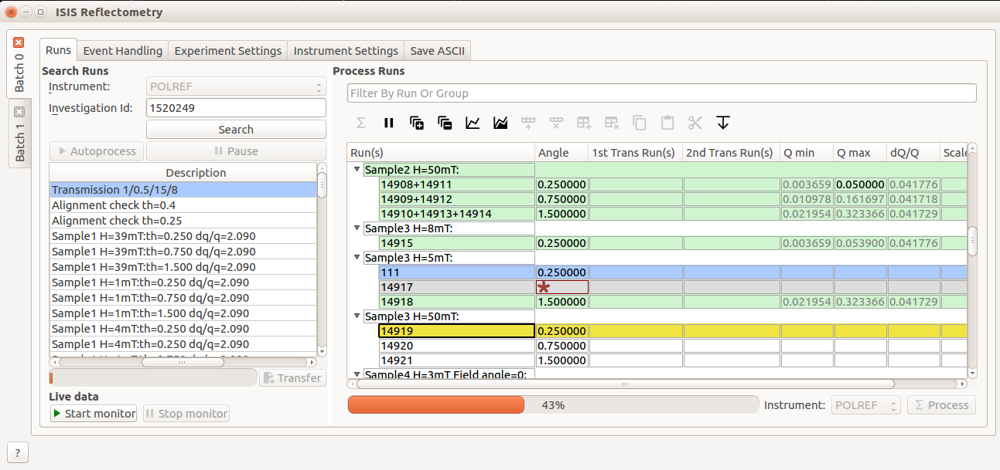
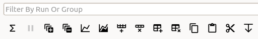
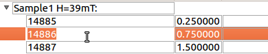
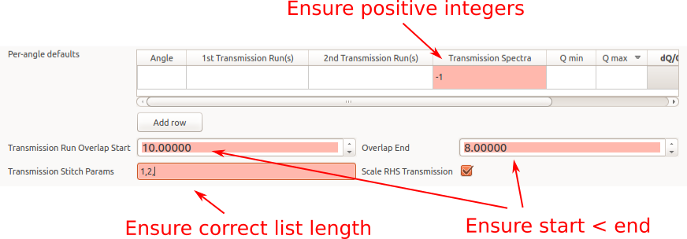

Reflectometry Changes#
ISIS Reflectometry Interface#


Usability improvements in the ISIS Reflectometry Interface#
Workbench Support#
The ISIS Reflectometry interface is now available in MantidWorkbench, as well as MantidPlot. See the workbench documentation for more details and the workbench release notes to see what else is included in this version.
Usability Improvements#
Major usability improvements have been added to the interface in this release. There are general layout improvements as well as new functionality for:
keyboard navigation;
input validation; and
pre-processing and stitching transmission runs.
The rest of this section describes the changes in more detail.
Significant under-the-hood changes have also taken place to update the interface to modern design and engineering standards, resulting in a much more stable, extensible interface.
Batches and Settings#

Batch tabs on the left contain all of the settings for a particular reduction#
Tabs are now grouped inside “Batches” rather than having separate “Groups” within each tab. This makes it easier to see which settings will be used for the current reduction.
Any number of Batches is now supported - batches can be added using the Batch menu, or removed by clicking the X on the tab.
The Settings tab has been split into two separate tabs for Experiment and Instrument Settings.
Default values for the Experiment and Instrument Settings tabs are automatically populated for the selected instrument.
Transmission Runs#

New transmission run options#
There are now separate input boxes for the first and second transmission runs.
Multiple runs can be specified for each transmission input - these will be summed prior to reduction. Multiple values are entered as a comma-separated list, similarly to the Run(s) column.
Specific spectra (i.e.
processing instructions) can be specified for the transmission runs on the Experiment Settings tab. If none are specified then the same spectra will be used as for the input runs.A new
Transmission stitch paramsinput allows you to stitch parameters specifically for the transmission runs rather than using the same parameters as for the output IvsQ workspaces.A new
Scale RHS transmission workspacecheck box allows you to control which workspace is scaled when stitching transmission runs.
The Toolbar#
A “Fill Down” button has been added, which allows filling all selected cells below the highest selected cell, in the column that is selected.
Filtering by run or group name is now possible using the search bar above the table. This accepts regular expressions.
Icons have been updated to be consistent between Workbench and MantidPlot.

The new toolbar icons and filter box#
Keyboard shortcuts#
Additional keyboard shortcuts have been added to aid navigation/editing in the runs table.
Shortcut |
Action |
|---|---|
|
Edit the current cell |
|
Cancel editing |
|
Next cell |
|
Previous cell |
|
Edit the next row / append a new row |
|
Insert child row |
|
Cut |
|
Copy |
|
Paste |
|
Delete the selected rows/groups |
|
Select next/previous row |
|
Extend selection to next/previous row |
|
Select all |

Editing the Runs table#
Processing and highlighting#

Highlighting on the runs table#
Additional highlighting has been added for rows and groups in the table to indicate which row is currently processing (yellow) and rows that are invalid and will be ignored (grey).
A row or group’s state is reset if its final output workspace(s) have been deleted
Renamed workspaces now remain associated with the correct row/group in the table, so they can still be plotted
Q min, Q max and dQ/Q are greyed out when they have been populated from the algorithm outputs so that you can easily distinguish between inputs and outputs
Input validation is more intuitive - invalid values are highlighted with a red background, or, in the table, cells with an invalid value are marked with a red star
The progress bar is more accurate, and remembers previous progress when you pause and restart processing.
Processing in event mode is now done asynchronously, so it no longer locks up MantidPlot.


Examples of invalid input checks#
Bug fixes#
The following bugs have been fixed since the last release:
Fixed an error about an unknown property value when starting the live data monitor from the reflectometry interface.
Fixed a problem where auto-saving would fail if the output for a row is a group workspace.
Fixed a problem where the live data monitor would not start. Also fixed an issue where the output workspace is created prematurely as a clone of the TOF workspace.
Removed/updated#
The
Generate Notebookcheckbox has been removed as this was not used and not useful in its current state.The deprecation of ISIS Reflectometry (Old) GUI has been pushed back to November 2019.
Algorithms#
Improvements#
An additional method to calculate background has been added to ReflectometryBackgroundSubtraction v1.
The output workspaces of ReflectometrySliceEventWorkspace v2 now have names which describe the slice.
In ReflectometryISISLoadAndProcess v1 all output workspaces have names which give information about the slice.
In ReflectometryISISLoadAndProcess v1 the TOF workspaces are now grouped together.
Changes have been made to the Polynomial method in ReflectometryBackgroundSubtraction v1 to improve fitting for high degree polynomials.
Bug fixes#
Fixed a bug in ReflectometrySumInQ that resulted in slightly too small bins in the output workspace.
Removed#
Version 1 of FindReflectometryLines has been removed. Use FindReflectometryLines-v2 instead.